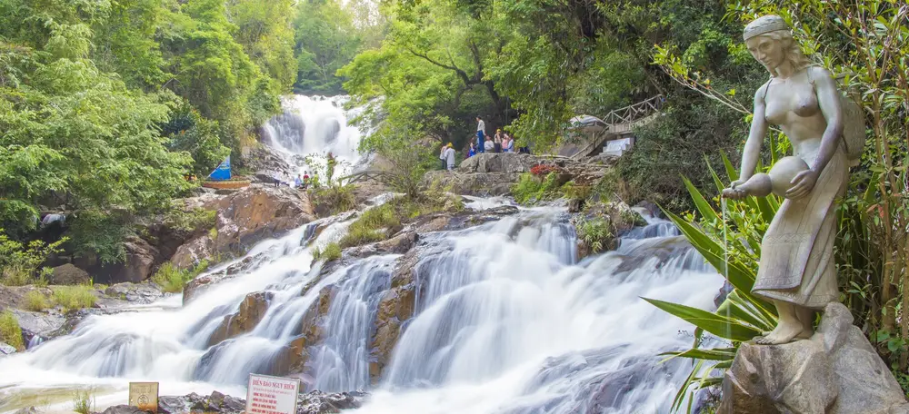
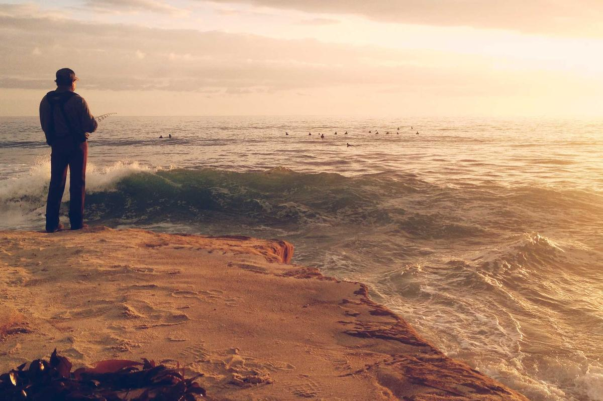
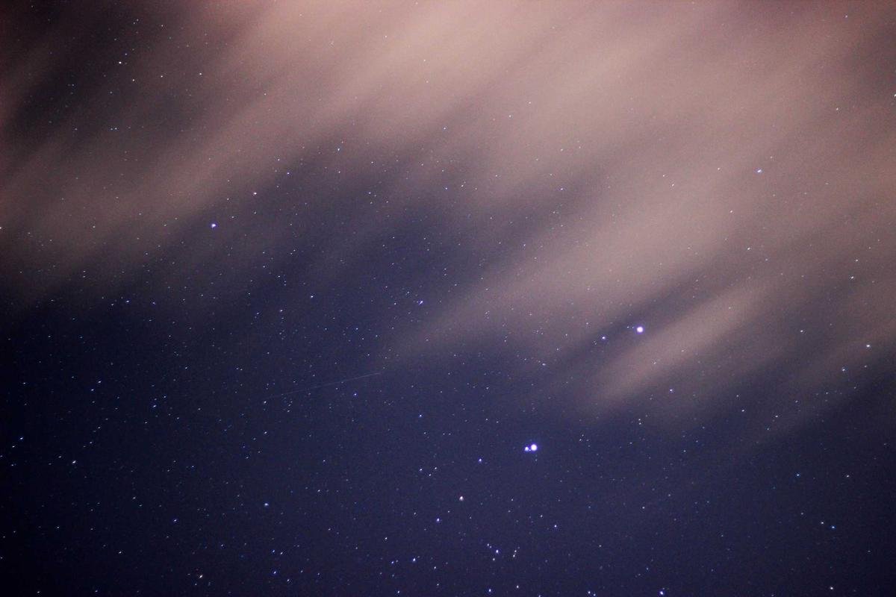
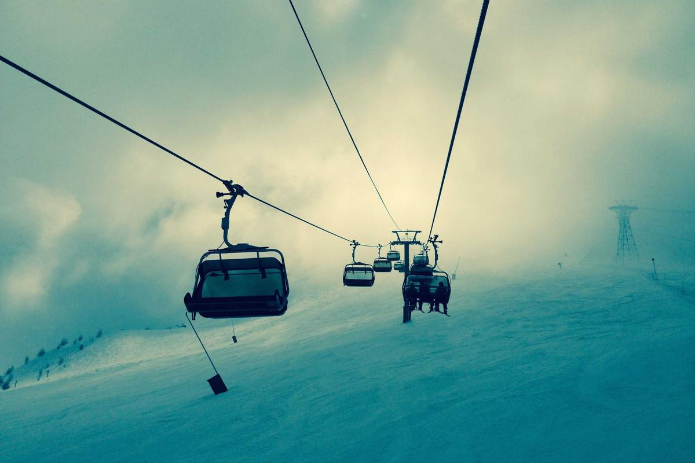

Trung tâm
Hồ Xuân Hương
Biểu tượng trung tâm Đà Lạt, thích hợp dạo bộ và chụp ảnh buổi chiều.
Trang vùng riêng cho Đà Lạt, mở rộng luôn cả nhánh Lạc Dương cũ với Hồ Xuân Hương, Ga Đà Lạt, Quảng trường Lâm Viên, Datanla, Langbiang, Dankia - Suối Vàng và Bidoup - Núi Bà.
Bộ địa danh giúp giữ đúng tinh thần thành phố du lịch lớn nhất của Lâm Đồng, đồng thời hấp thụ luôn các điểm Lạc Dương cũ.
Biểu tượng trung tâm Đà Lạt, thích hợp dạo bộ và chụp ảnh buổi chiều.

Kiến trúc cổ nổi bật, dễ tạo dấu ấn thị giác cho trang thành phố.

Điểm check-in quen thuộc với biểu tượng bông hoa và nụ atisô.

Hợp cho nội dung trải nghiệm máng trượt và du lịch nhẹ.
Điểm ngắm toàn cảnh, phù hợp trekking và săn mây trên nhánh Lạc Dương cũ.
Không gian đồi chè và bình minh giúp trang Đà Lạt thêm chiều sâu.

Vùng mặt nước và đồi thông nổi tiếng, từng là mạch cảnh quan của Lạc Dương cũ.

Khu rừng đặc dụng lớn, hợp cho trekking và nội dung thiên nhiên chuyên sâu.

Điểm tham quan sinh thái quen thuộc, phù hợp ảnh đẹp và trải nghiệm nhẹ.

Cao điểm ngắm toàn cảnh, dễ nối với các hành trình săn mây của Đà Lạt mở rộng.
Khung tuyến đơn giản để bạn phát triển thành bài 2 ngày 1 đêm hoặc 3 ngày 2 đêm.
Những lưu ý cơ bản để người xem dễ lên kế hoạch.
Sáng sớm và chiều tối là thời gian đẹp nhất để chụp ảnh, ngắm sương và cảm nhận khí hậu mát.
Nên gom các điểm trong trung tâm trước rồi mới đi ra ngoại ô như Datanla, Langbiang hoặc Cầu Đất.
Trang này có thể mở rộng thêm cho từng điểm riêng như hồ, thác, đồi chè và các quán cà phê view đẹp.